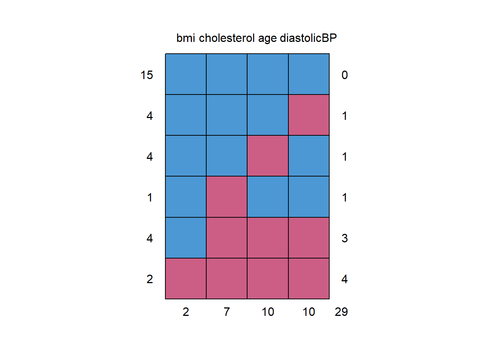
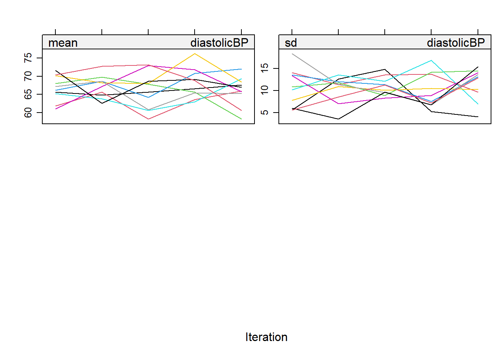

Imputation
What is imputation?
Imputation is the process of replacing missing data with substituted values. In health research, it’s common to have missing data. This tutorial teaches you how to handle and replace these missing values using the mice package in R.
Why is imputation important?
Missing data can lead to biased or incorrect results. Imputation helps in making the dataset complete, which can lead to more accurate analyses.
Key reference
In this discussion, our primary guide and source of information is the work titled “Flexible Imputation of Missing Data” by Stef van Buuren, denoted here as (Van Buuren 2018). This book is an invaluable resource for anyone looking to delve deeper into the intricacies of handling missing data, especially in the context of statistical analyses. Below we also cited the relevant section numbers.
First, you need to load the necessary libraries:
Type of missing data
- Ref: (Van Buuren 2018), Section 1.2
In this section, we are going to introduce three types of missing data that we will encounter in data analysis.
- Missing Completely at Random (MCAR):
The reason data is missing is completely random and not related to any measured or unmeasured variables. It’s often an unrealistic assumption.
- Missing at Random (MAR):
The missing data is related to variables that are observed.
- Missing Not at Random (MNAR):
The missing data is related to variables that are not observed.
Why does missingness type matter?
The type of missingness affects how you handle the missing data:
- If data is MCAR, you can still analyze the complete cases without introducing bias.
- If data is MAR, you can use imputation to replace the missing values.
- If data is MNAR, it’s challenging to address, and estimates will likely be biased. We could do some sensitivity analyses to check the impact.
Video content (optional)
For those who prefer a video walkthrough, feel free to watch the video below, which offers a description of an earlier version of the above content.
Data imputation
Getting to know the data
Before imputing, you should understand the data. The tutorial uses the analytic.with.miss dataset from NHANES. Various plots and functions are used to inspect the missing data pattern and relationships between variables.
Take a look here for those who are interested in how the analytic data was created.
For the purposes of this lab, we are just going to treat the data as SRS, and not going to deal with intricacies of survey data analysis.
require(VIM)
load("Data/missingdata/NHANES17.RData")
NHANES17s <- analytic.with.miss[1:30,c("age", "bmi", "cholesterol","diastolicBP")]
NHANES17s
#> bmi cholesterol age diastolicBP
#> 15 1 1 1 1 0
#> 4 1 1 1 0 1
#> 4 1 1 0 1 1
#> 1 1 0 1 1 1
#> 4 1 0 0 0 3
#> 2 0 0 0 0 4
#> 2 7 10 10 29
# Inspect the missing data pattern (each row = pattern)
# possible missingness (0,1) pattern and counts
# last col = missing counts for each variables
# last row = how many variable values missing in the row
# First col: Frequency of the pattern
# e,g, 2 cases missing for bmi
require(DataExplorer)
plot_missing(NHANES17s)
#> Warning: `aes_string()` was deprecated in ggplot2 3.0.0.
#> ℹ Please use tidy evaluation idioms with `aes()`.
#> ℹ See also `vignette("ggplot2-in-packages")` for more information.
#> ℹ The deprecated feature was likely used in the DataExplorer package.
#> Please report the issue at
#> <https://github.com/boxuancui/DataExplorer/issues>.


Single imputation
- Ref: (Van Buuren 2018), Section 1.3
Impute NA only once. Below are some examples (Van Buuren and Groothuis-Oudshoorn 2011):
Mean imputation
- Ref: (Van Buuren 2018), Section 1.3.3, and (Buuren and Groothuis-Oudshoorn 2010)
Mean imputation is a straightforward method where missing values in a dataset are replaced with the mean of the observed values. While it’s simple and intuitive, this approach can reduce the overall variability of the data, leading to an underestimation of variance. This can be problematic in statistical analyses where understanding data spread is crucial.
# Replace missing values by mean
imputation1 <- mice(NHANES17s,
method = "mean", # Replace by mean of the other values
m = 1, # Number of multiple imputations.
maxit = 1) # Number of iteration; mostly useful for convergence
#>
#> iter imp variable
#> 1 1 age bmi cholesterol diastolicBP
imputation1$imp
#> $age
#> 1
#> 1 57.4
#> 2 57.4
#> 4 57.4
#> 5 57.4
#> 8 57.4
#> 10 57.4
#> 17 57.4
#> 18 57.4
#> 22 57.4
#> 23 57.4
#>
#> $bmi
#> 1
#> 8 25.12857
#> 18 25.12857
#>
#> $cholesterol
#> 1
#> 1 178.8261
#> 2 178.8261
#> 8 178.8261
#> 18 178.8261
#> 22 178.8261
#> 23 178.8261
#> 30 178.8261
#>
#> $diastolicBP
#> 1
#> 1 67.6
#> 2 67.6
#> 3 67.6
#> 6 67.6
#> 8 67.6
#> 12 67.6
#> 18 67.6
#> 22 67.6
#> 23 67.6
#> 25 67.6
complete(imputation1, action = 1) # this is a function from miceRegression Imputation
- Ref: (Van Buuren 2018), Section 1.3.4
Regression imputation offers a more nuanced approach, especially when dealing with interrelated variables. By building a regression model using observed data, missing values are predicted based on the relationships between variables. This method can provide more accurate estimates for missing values by leveraging the inherent correlations within the data, making it a preferred choice in many scenarios over mean imputation.
\(Y \sim X\)
\(age \sim bmi + cholesterol + diastolicBP\)
imputation2 <- mice(NHANES17s,
method = "norm.predict", # regression imputation
seed = 1,
m = 1,
print = FALSE)
# look at all imputed values
imputation2$imp
#> $age
#> 1
#> 1 55.32215
#> 2 54.99604
#> 4 55.65437
#> 5 53.68539
#> 8 56.70424
#> 10 55.79329
#> 17 54.38372
#> 18 56.70422
#> 22 54.81486
#> 23 55.06851
#>
#> $bmi
#> 1
#> 8 25.12857
#> 18 25.12857
#>
#> $cholesterol
#> 1
#> 1 183.3772
#> 2 184.2347
#> 8 179.7431
#> 18 179.7431
#> 22 184.7111
#> 23 184.0442
#> 30 183.4399
#>
#> $diastolicBP
#> 1
#> 1 66.48453
#> 2 66.24254
#> 3 68.82463
#> 6 67.47980
#> 8 67.51011
#> 12 68.91318
#> 18 67.51011
#> 22 66.10810
#> 23 66.29631
#> 25 67.93401
# examine the correlation between age and bmi before and after imputation
fit1 <- lm(age ~ bmi, NHANES17s)
summary(fit1) ## original data
#>
#> Call:
#> lm(formula = age ~ bmi, data = NHANES17s)
#>
#> Residuals:
#> Min 1Q Median 3Q Max
#> -37.383 -5.194 3.168 9.444 15.965
#>
#> Coefficients:
#> Estimate Std. Error t value Pr(>|t|)
#> (Intercept) 53.3482 17.1585 3.109 0.00606 **
#> bmi 0.1462 0.6063 0.241 0.81219
#> ---
#> Signif. codes: 0 '***' 0.001 '**' 0.01 '*' 0.05 '.' 0.1 ' ' 1
#>
#> Residual standard error: 15.51 on 18 degrees of freedom
#> (10 observations deleted due to missingness)
#> Multiple R-squared: 0.003219, Adjusted R-squared: -0.05216
#> F-statistic: 0.05814 on 1 and 18 DF, p-value: 0.8122
sqrt(summary(fit1)$r.squared)
#> [1] 0.05674047
fit2 <- lm(age ~ bmi, mice::complete(imputation2))
summary(fit2) ## imputed complete data
#>
#> Call:
#> lm(formula = age ~ bmi, data = mice::complete(imputation2))
#>
#> Residuals:
#> Min 1Q Median 3Q Max
#> -37.152 -1.407 0.000 8.026 15.989
#>
#> Coefficients:
#> Estimate Std. Error t value Pr(>|t|)
#> (Intercept) 52.1516 9.2485 5.639 4.86e-06 ***
#> bmi 0.1812 0.3568 0.508 0.616
#> ---
#> Signif. codes: 0 '***' 0.001 '**' 0.01 '*' 0.05 '.' 0.1 ' ' 1
#>
#> Residual standard error: 12.45 on 28 degrees of freedom
#> Multiple R-squared: 0.009127, Adjusted R-squared: -0.02626
#> F-statistic: 0.2579 on 1 and 28 DF, p-value: 0.6155
sqrt(summary(fit2)$r.squared)
#> [1] 0.09553283
## Relationship become stronger before imputation.
# with(data=NHANES17s, cor(age, bmi, use = "complete.obs"))
with(data=NHANES17s, cor(age, bmi, use = "pairwise.complete.obs"))
#> [1] 0.05674047
with(data = mice::complete(imputation2), cor(age, bmi))
#> [1] 0.09553283Stochastic regression imputation
- Ref: (Van Buuren 2018), Section 1.3.5
Regression imputation, while powerful, has an inherent limitation. When it employs the fitted model to predict missing values, it does so without incorporating the error terms. This means that the imputed values are precisely on the regression line, leading to an overly perfect fit. As a result, the natural variability present in real-world data is not captured, causing the imputed dataset to exhibit biased correlations and reduced variance. Essentially, the data becomes too “clean,” and this lack of variability can mislead subsequent analyses, making them overly optimistic or even erroneous.
Recognizing this limitation, stochastic regression imputation was introduced as an enhancement. Instead of merely using the fitted model, it adds a randomly drawn error term during the imputation process. This error term reintroduces the natural variability that the original regression imputation method missed. By doing so, the imputed values are scattered around the regression line, more accurately reflecting the true correlations and distributions in the dataset. This method, therefore, offers a more realistic representation of the data, ensuring that subsequent analyses are grounded in a dataset that mirrors genuine variability and relationships.
\(Y \sim X + e\)
\(age \sim bmi + cholesterol + diastolicBP + error\)
imputation3 <- mice(NHANES17s, method = "norm.nob", # stochastic regression imputation
m = 1, maxit = 1, seed = 504, print = FALSE)
# look at all imputed values
imputation3$imp
#> $age
#> 1
#> 1 79.59513
#> 2 53.94601
#> 4 73.76486
#> 5 43.69817
#> 8 49.70112
#> 10 43.81002
#> 17 29.72590
#> 18 61.15172
#> 22 58.75506
#> 23 78.39545
#>
#> $bmi
#> 1
#> 8 27.53270
#> 18 31.52568
#>
#> $cholesterol
#> 1
#> 1 252.2928
#> 2 209.7680
#> 8 169.2450
#> 18 107.7585
#> 22 181.8617
#> 23 239.9008
#> 30 131.8489
#>
#> $diastolicBP
#> 1
#> 1 75.02181
#> 2 44.45935
#> 3 86.69637
#> 6 60.54256
#> 8 63.80884
#> 12 60.03311
#> 18 73.94575
#> 22 36.70323
#> 23 73.95647
#> 25 65.84012
#mice::complete(imputation3)
# examine the correlation between age and bmi before and after imputation
fit1 <- lm(age ~ bmi, NHANES17s)
summary(fit1)
#>
#> Call:
#> lm(formula = age ~ bmi, data = NHANES17s)
#>
#> Residuals:
#> Min 1Q Median 3Q Max
#> -37.383 -5.194 3.168 9.444 15.965
#>
#> Coefficients:
#> Estimate Std. Error t value Pr(>|t|)
#> (Intercept) 53.3482 17.1585 3.109 0.00606 **
#> bmi 0.1462 0.6063 0.241 0.81219
#> ---
#> Signif. codes: 0 '***' 0.001 '**' 0.01 '*' 0.05 '.' 0.1 ' ' 1
#>
#> Residual standard error: 15.51 on 18 degrees of freedom
#> (10 observations deleted due to missingness)
#> Multiple R-squared: 0.003219, Adjusted R-squared: -0.05216
#> F-statistic: 0.05814 on 1 and 18 DF, p-value: 0.8122
fit3 <- lm(age ~ bmi, mice::complete(imputation3))
summary(fit3)
#>
#> Call:
#> lm(formula = age ~ bmi, data = mice::complete(imputation3))
#>
#> Residuals:
#> Min 1Q Median 3Q Max
#> -37.089 -6.691 3.183 10.104 21.288
#>
#> Coefficients:
#> Estimate Std. Error t value Pr(>|t|)
#> (Intercept) 60.4173 11.4671 5.269 1.33e-05 ***
#> bmi -0.1206 0.4371 -0.276 0.785
#> ---
#> Signif. codes: 0 '***' 0.001 '**' 0.01 '*' 0.05 '.' 0.1 ' ' 1
#>
#> Residual standard error: 15.53 on 28 degrees of freedom
#> Multiple R-squared: 0.002712, Adjusted R-squared: -0.03291
#> F-statistic: 0.07614 on 1 and 28 DF, p-value: 0.7846
## Fitted coefficients of bmi are much closer before and after imputation
# with(data=NHANES17s, cor(age, bmi, use = "complete.obs"))
with(data=NHANES17s, cor(age, bmi, use = "pairwise.complete.obs"))
#> [1] 0.05674047
with(data = mice::complete(imputation3), cor(age, bmi))
#> [1] -0.05207502
# see the direction change?Predictive mean matching
Predictive Mean Matching (PMM) is an advanced imputation technique that aims to provide more realistic imputations for missing data. Let’s break it down:
In this context, we’re trying to fill in missing values for the variable ‘age’. To do this, we use other variables like ‘bmi’, ‘cholesterol’, and ‘diastolicBP’ to predict ‘age’. First, a regression model is run using the available data to estimate the relationship between ‘age’ and the predictor variables. From this model, we get a coefficient, which is then adjusted slightly to introduce some randomness. Using this adjusted coefficient, we predict the missing ‘age’ values for all subjects. For example, if ‘subject 19’ has a missing age value, we might predict it to be 45.5 years. Instead of using this predicted value directly, we look for other subjects who have actual age values and whose predicted ages are close to 45.5 years. From these subjects, one is randomly chosen, and their real age is used as the imputed value for ‘subject 19’. In this way, PMM ensures that the imputed values are based on real, observed data from the dataset.
- Assume \(Y\) =
age, a variable with some missing values. \(X\) (say,bmi,cholesterol,diastolicBP) are predictors of \(Y\). - Estimate beta coef \(\beta\) from complete case running \(Y \sim X + e\)
- generate new \(\beta* \sim Normal(b,se_b)\).
- using \(\beta*\), predict new \(\hat{Y}\)
predicted agefor all subjects (those with missing and observedage):- If
subject 19(say) has missing values inagevariable, find out hispredicted age\(\hat{Y}\) (say, 45.5). - Find others subjects,
subjects 2, 15, 24(say) who has theiragemeasured and their predicted age \(\hat{Y}\) (say,predicted ages43.9,45.7,46.1 with real ages 43,45,46 respectively) are close tosubject 19(predicted age 45.5). - Randomly select
subject 2with real/observed age 43, and impute 43 forsubject 19’s missing age.
- If
The strength of PMM lies in its approach. Instead of imputing a potentially artificial value based on a prediction, it imputes a real, observed value from the dataset. This ensures that the imputed data retains the original data’s characteristics and doesn’t introduce any unrealistic values. It offers a safeguard against extrapolation, ensuring that the imputed values are always within the plausible range of the dataset.
Video content (optional)
For those who prefer a video walkthrough, feel free to watch the video below, which offers a description of an earlier version of the above content.
Multiple imputation and workflow
- Ref: (Van Buuren 2018), Sections 1.4 and 5.1
- Ref: (Buuren and Groothuis-Oudshoorn 2010)
We have learned different methods of imputation. In this section, we will introduce how to incorporate the data imputation into data analysis. In multiple imputation data analysis, three steps will be taken:
Step 0: Set imputation model: Before starting the imputation process, it’s crucial to determine the appropriate imputation model based on the nature of the missing data and the relationships between variables. This model will guide how the missing values are estimated. For instance, if the data is missing at random, a linear regression model might be used for continuous data, while logistic regression might be used for binary data. The choice of model can significantly impact the quality of the imputed data, so it’s essential to understand the underlying mechanisms causing the missingness and select a model accordingly.
Step 1: The incomplete dataset will be imputed \(m\) times: In this step, the incomplete dataset is imputed multiple times, resulting in \(m\) different “complete” datasets. The reason for creating multiple datasets is to capture the uncertainty around the missing values. Each of these datasets will have slightly different imputed values, reflecting the variability and uncertainty in the imputation process. The number of imputations, \(m\), is typically chosen based on the percentage of missing data and the desired level of accuracy. Common choices for \(m\) range from 5 to 50, but more imputations provide more accurate results, especially when the percentage of missing data is high.
Step 2: Each \(m\) complete datasets will be analyzed separately by standard analysis (e.g., regression model): Once the \(m\) complete datasets are generated, each one is analyzed separately using standard statistical methods. For example, if the research question involves understanding the relationship between two variables, a regression model might be applied to each dataset. This step produces \(m\) sets of analysis results, one for each imputed dataset.
Step 3: The analysis results will be pooled / aggregated together by Rubin’s rules (1987): The final step involves combining the results from the \(m\) separate analyses into a single set of results. This is done using Rubin’s rules (1987) (Little and Rubin 1987), which provide a way to aggregate the estimates and adjust for the variability between the imputed datasets. The pooled results give a more accurate and robust estimate than analyzing a single imputed dataset. Rubin’s rules ensure that the combined results reflect both the within-imputation variability (the variability in results from analyzing each dataset separately) and the between-imputation variability (the differences in results across the imputed datasets).
Step 0
Set imputation model:
ini <- mice(data = NHANES17s, maxit = 0, print = FALSE)
pred <- ini$pred
pred
#> age bmi cholesterol diastolicBP
#> age 0 1 1 1
#> bmi 1 0 1 1
#> cholesterol 1 1 0 1
#> diastolicBP 1 1 1 0
# A value of 1 indicates that column variables (say, bmi, cholesterol, diastolicBP)
# are used as a predictor to impute the a row variable (say, age).
pred[,"diastolicBP"] <- 0
# if you believe 'diastolicBP' should not be a predictor in any imputation model
pred
#> age bmi cholesterol diastolicBP
#> age 0 1 1 0
#> bmi 1 0 1 0
#> cholesterol 1 1 0 0
#> diastolicBP 1 1 1 0
# for cholesterol: bmi and age used to predict cholesterol (diastolicBP is not a predictor)
# for diastolicBP: bmi, age and cholesterol used to predict diastolicBP
# (diastolicBP itself is not a predictor) Set imputation method:
See Table 1 of (Van Buuren and Groothuis-Oudshoorn 2011).
meth <- ini$meth
meth
#> age bmi cholesterol diastolicBP
#> "pmm" "pmm" "pmm" "pmm"
# pmm is generally a good method,
# but let's see how to work with other methods
# just as an example.
# Specifying imputation method:
meth["bmi"] <- "mean"
# for BMI: no predictor used in mean method
# (only average of observed bmi)
meth["cholesterol"] <- "norm.predict"
meth["diastolicBP"] <- "norm.nob"
meth
#> age bmi cholesterol diastolicBP
#> "pmm" "mean" "norm.predict" "norm.nob"Set imputation model based on correlation alone:
Step 1
# Step 1 Impute the incomplete data m=10 times
imputation4 <- mice(data=NHANES17s,
seed=504,
method = meth,
predictorMatrix = predictor.selection,
m=10, # imputation will be done 10 times (i.e., 10 imputed datasets)
maxit=3)
#>
#> iter imp variable
#> 1 1 age bmi cholesterol diastolicBP
#> 1 2 age bmi cholesterol diastolicBP
#> 1 3 age bmi cholesterol diastolicBP
#> 1 4 age bmi cholesterol diastolicBP
#> 1 5 age bmi cholesterol diastolicBP
#> 1 6 age bmi cholesterol diastolicBP
#> 1 7 age bmi cholesterol diastolicBP
#> 1 8 age bmi cholesterol diastolicBP
#> 1 9 age bmi cholesterol diastolicBP
#> 1 10 age bmi cholesterol diastolicBP
#> 2 1 age bmi cholesterol diastolicBP
#> 2 2 age bmi cholesterol diastolicBP
#> 2 3 age bmi cholesterol diastolicBP
#> 2 4 age bmi cholesterol diastolicBP
#> 2 5 age bmi cholesterol diastolicBP
#> 2 6 age bmi cholesterol diastolicBP
#> 2 7 age bmi cholesterol diastolicBP
#> 2 8 age bmi cholesterol diastolicBP
#> 2 9 age bmi cholesterol diastolicBP
#> 2 10 age bmi cholesterol diastolicBP
#> 3 1 age bmi cholesterol diastolicBP
#> 3 2 age bmi cholesterol diastolicBP
#> 3 3 age bmi cholesterol diastolicBP
#> 3 4 age bmi cholesterol diastolicBP
#> 3 5 age bmi cholesterol diastolicBP
#> 3 6 age bmi cholesterol diastolicBP
#> 3 7 age bmi cholesterol diastolicBP
#> 3 8 age bmi cholesterol diastolicBP
#> 3 9 age bmi cholesterol diastolicBP
#> 3 10 age bmi cholesterol diastolicBP
imputation4$pred
#> age bmi cholesterol diastolicBP
#> age 0 1 1 1
#> bmi 0 0 0 0
#> cholesterol 1 1 0 1
#> diastolicBP 1 1 1 0
## look at the variables used for imputation
mice::complete(imputation4, action = 1) # 1 imputed data all <- mice::complete(imputation4, action="long") # combine all 5 imputed datasets
dim(all)
#> [1] 300 6
head(all)## you can change the way of displaying the data
data_hori <- mice::complete(imputation4, action="broad") # display five imputations horizontally
#> New names:
#> • `age` -> `age...1`
#> • `bmi` -> `bmi...2`
#> • `cholesterol` -> `cholesterol...3`
#> • `diastolicBP` -> `diastolicBP...4`
#> • `age` -> `age...5`
#> • `bmi` -> `bmi...6`
#> • `cholesterol` -> `cholesterol...7`
#> • `diastolicBP` -> `diastolicBP...8`
#> • `age` -> `age...9`
#> • `bmi` -> `bmi...10`
#> • `cholesterol` -> `cholesterol...11`
#> • `diastolicBP` -> `diastolicBP...12`
#> • `age` -> `age...13`
#> • `bmi` -> `bmi...14`
#> • `cholesterol` -> `cholesterol...15`
#> • `diastolicBP` -> `diastolicBP...16`
#> • `age` -> `age...17`
#> • `bmi` -> `bmi...18`
#> • `cholesterol` -> `cholesterol...19`
#> • `diastolicBP` -> `diastolicBP...20`
#> • `age` -> `age...21`
#> • `bmi` -> `bmi...22`
#> • `cholesterol` -> `cholesterol...23`
#> • `diastolicBP` -> `diastolicBP...24`
#> • `age` -> `age...25`
#> • `bmi` -> `bmi...26`
#> • `cholesterol` -> `cholesterol...27`
#> • `diastolicBP` -> `diastolicBP...28`
#> • `age` -> `age...29`
#> • `bmi` -> `bmi...30`
#> • `cholesterol` -> `cholesterol...31`
#> • `diastolicBP` -> `diastolicBP...32`
#> • `age` -> `age...33`
#> • `bmi` -> `bmi...34`
#> • `cholesterol` -> `cholesterol...35`
#> • `diastolicBP` -> `diastolicBP...36`
#> • `age` -> `age...37`
#> • `bmi` -> `bmi...38`
#> • `cholesterol` -> `cholesterol...39`
#> • `diastolicBP` -> `diastolicBP...40`
dim(data_hori)
#> [1] 30 40
head(data_hori)
## Compare means of each imputed dataset
colMeans(data_hori)
#> age.1 bmi.1 cholesterol.1 diastolicBP.1 age.2
#> 61.06667 25.12857 179.47152 68.06998 58.20000
#> bmi.2 cholesterol.2 diastolicBP.2 age.3 bmi.3
#> 25.12857 179.71210 66.61289 57.40000 25.12857
#> cholesterol.3 diastolicBP.3 age.4 bmi.4 cholesterol.4
#> 180.28681 68.77854 54.86667 25.12857 179.58873
#> diastolicBP.4 age.5 bmi.5 cholesterol.5 diastolicBP.5
#> 66.13461 52.80000 25.12857 179.35478 66.74254
#> age.6 bmi.6 cholesterol.6 diastolicBP.6 age.7
#> 60.00000 25.12857 179.22499 66.76592 58.43333
#> bmi.7 cholesterol.7 diastolicBP.7 age.8 bmi.8
#> 25.12857 178.99900 66.82760 56.20000 25.12857
#> cholesterol.8 diastolicBP.8 age.9 bmi.9 cholesterol.9
#> 179.63656 67.31160 59.06667 25.12857 179.58295
#> diastolicBP.9 age.10 bmi.10 cholesterol.10 diastolicBP.10
#> 66.37078 55.63333 25.12857 179.69042 67.60832Step 2
# Step 2 Analyze the imputed data
fit4 <- with(data = imputation4, exp = lm(cholesterol ~ age + bmi + diastolicBP))
## fit model with each of 10 datasets separately
fit4
#> call :
#> with.mids(data = imputation4, expr = lm(cholesterol ~ age + bmi +
#> diastolicBP))
#>
#> call1 :
#> mice(data = NHANES17s, m = 10, method = meth, predictorMatrix = predictor.selection,
#> maxit = 3, seed = 504)
#>
#> nmis :
#> [1] 10 2 7 10
#>
#> analyses :
#> [[1]]
#>
#> Call:
#> lm(formula = cholesterol ~ age + bmi + diastolicBP)
#>
#> Coefficients:
#> (Intercept) age bmi diastolicBP
#> 210.68650 -0.19085 -0.52112 -0.09498
#>
#>
#> [[2]]
#>
#> Call:
#> lm(formula = cholesterol ~ age + bmi + diastolicBP)
#>
#> Coefficients:
#> (Intercept) age bmi diastolicBP
#> 185.56395 0.06366 -0.49154 0.04196
#>
#>
#> [[3]]
#>
#> Call:
#> lm(formula = cholesterol ~ age + bmi + diastolicBP)
#>
#> Coefficients:
#> (Intercept) age bmi diastolicBP
#> 188.01460 -0.07922 -0.52325 0.14493
#>
#>
#> [[4]]
#>
#> Call:
#> lm(formula = cholesterol ~ age + bmi + diastolicBP)
#>
#> Coefficients:
#> (Intercept) age bmi diastolicBP
#> 210.2814 0.1096 -0.4602 -0.3802
#>
#>
#> [[5]]
#>
#> Call:
#> lm(formula = cholesterol ~ age + bmi + diastolicBP)
#>
#> Coefficients:
#> (Intercept) age bmi diastolicBP
#> 167.8965 0.7171 -0.7613 -0.1090
#>
#>
#> [[6]]
#>
#> Call:
#> lm(formula = cholesterol ~ age + bmi + diastolicBP)
#>
#> Coefficients:
#> (Intercept) age bmi diastolicBP
#> 187.4324 0.1727 -0.3452 -0.1482
#>
#>
#> [[7]]
#>
#> Call:
#> lm(formula = cholesterol ~ age + bmi + diastolicBP)
#>
#> Coefficients:
#> (Intercept) age bmi diastolicBP
#> 203.45344 -0.22713 -0.37039 -0.02806
#>
#>
#> [[8]]
#>
#> Call:
#> lm(formula = cholesterol ~ age + bmi + diastolicBP)
#>
#> Coefficients:
#> (Intercept) age bmi diastolicBP
#> 213.721570 -0.003491 -0.517870 -0.310132
#>
#>
#> [[9]]
#>
#> Call:
#> lm(formula = cholesterol ~ age + bmi + diastolicBP)
#>
#> Coefficients:
#> (Intercept) age bmi diastolicBP
#> 205.74248 -0.16224 -0.46983 -0.07188
#>
#>
#> [[10]]
#>
#> Call:
#> lm(formula = cholesterol ~ age + bmi + diastolicBP)
#>
#> Coefficients:
#> (Intercept) age bmi diastolicBP
#> 181.2751 0.0698 -0.5425 0.1208Step 3
Understanding the pooled results
We will show the result of entire pool later. First we want to show the pooled results for the age variable only an an example.
require(dplyr)
res10 <- summary(fit4) %>% as_tibble %>% print(n=40)
#> # A tibble: 40 × 7
#> term estimate std.error statistic p.value nobs df.residual
#> <chr> <dbl> <dbl> <dbl> <dbl> <int> <dbl>
#> 1 (Intercept) 211. 53.6 3.93 0.000561 30 26
#> 2 age -0.191 0.452 -0.422 0.676 30 26
#> 3 bmi -0.521 0.943 -0.553 0.585 30 26
#> 4 diastolicBP -0.0950 0.563 -0.169 0.867 30 26
#> 5 (Intercept) 186. 47.9 3.88 0.000644 30 26
#> 6 age 0.0637 0.459 0.139 0.891 30 26
#> 7 bmi -0.492 0.939 -0.524 0.605 30 26
#> 8 diastolicBP 0.0420 0.533 0.0787 0.938 30 26
#> 9 (Intercept) 188. 48.9 3.85 0.000694 30 26
#> 10 age -0.0792 0.470 -0.169 0.867 30 26
#> 11 bmi -0.523 0.926 -0.565 0.577 30 26
#> 12 diastolicBP 0.145 0.547 0.265 0.793 30 26
#> 13 (Intercept) 210. 38.6 5.44 0.0000105 30 26
#> 14 age 0.110 0.372 0.295 0.771 30 26
#> 15 bmi -0.460 0.950 -0.485 0.632 30 26
#> 16 diastolicBP -0.380 0.534 -0.712 0.483 30 26
#> 17 (Intercept) 168. 39.6 4.24 0.000253 30 26
#> 18 age 0.717 0.299 2.39 0.0241 30 26
#> 19 bmi -0.761 0.898 -0.848 0.404 30 26
#> 20 diastolicBP -0.109 0.500 -0.218 0.829 30 26
#> 21 (Intercept) 187. 57.1 3.28 0.00294 30 26
#> 22 age 0.173 0.437 0.395 0.696 30 26
#> 23 bmi -0.345 0.943 -0.366 0.717 30 26
#> 24 diastolicBP -0.148 0.569 -0.260 0.797 30 26
#> 25 (Intercept) 203. 48.5 4.20 0.000278 30 26
#> 26 age -0.227 0.390 -0.583 0.565 30 26
#> 27 bmi -0.370 0.921 -0.402 0.691 30 26
#> 28 diastolicBP -0.0281 0.536 -0.0523 0.959 30 26
#> 29 (Intercept) 214. 51.5 4.15 0.000313 30 26
#> 30 age -0.00349 0.450 -0.00776 0.994 30 26
#> 31 bmi -0.518 0.927 -0.559 0.581 30 26
#> 32 diastolicBP -0.310 0.525 -0.590 0.560 30 26
#> 33 (Intercept) 206. 47.8 4.30 0.000213 30 26
#> 34 age -0.162 0.392 -0.414 0.682 30 26
#> 35 bmi -0.470 0.921 -0.510 0.614 30 26
#> 36 diastolicBP -0.0719 0.523 -0.137 0.892 30 26
#> 37 (Intercept) 181. 44.4 4.08 0.000379 30 26
#> 38 age 0.0698 0.353 0.198 0.845 30 26
#> 39 bmi -0.543 0.970 -0.559 0.581 30 26
#> 40 diastolicBP 0.121 0.558 0.216 0.830 30 26
m10 <- res10[res10$term == "age",]
m10Let us describe the components of a pool for the age variable only:
m.number <- 10
# estimate = pooled estimate
# = sum of (m “beta-hat” estimates) / m (mean of m estimated statistics)
estimate <- mean(m10$estimate)
estimate
#> [1] 0.04699243
# ubar = sum of (m variance[beta] estimates) / m
# = within-imputation variance (mean of estimated variances)
ubar.var <- mean(m10$std.error^2)
ubar.var
#> [1] 0.1686837
# b = variance of (m “beta-hat” estimates)
# = between-imputation variance
# (degree to which estimated statistic /
# “beta-hat” varies across m imputed datasets).
# This b is not available for single imputation when m = 1.
b.var <- var(m10$estimate)
b.var
#> [1] 0.07372796
# t = ubar + b + b/m = total variance according to Rubin’s rules
# (within-imputation & between imputation variation)
t.var <- ubar.var + b.var + b.var/m.number
t.var
#> [1] 0.2497845
# riv = relative increase in variance
riv = (b.var + b.var/m.number)/ubar.var
riv
#> [1] 0.4807859
# lambda = proportion of variance to due nonresponse
lambda = (b.var + b.var/m.number)/t.var
lambda
#> [1] 0.3246829
# df (approximate for large sample without correction)
df.large.sample <- (m.number - 1)/lambda^2
df.large.sample
#> [1] 85.37359
# df (hypothetical complete data)
dfcom <- m10$nobs[1] - 4 # n = 30, # parameters = 4
dfcom
#> [1] 26
# df (Barnard-Rubin correction)
df.obs <- (dfcom + 1)/(dfcom + 3) * dfcom * (1 - lambda)
df.c <- df.large.sample * df.obs/(df.large.sample + df.obs)
df.c
#> [1] 13.72019
# fmi = fraction of missing information per parameter
fmi = (riv + 2/(df.large.sample +3)) / (1 + riv)
fmi # based on large sample approximation
#> [1] 0.3399662
fmi = (riv + 2/(df.c +3)) / (1 + riv)
fmi # Barnard-Rubin correction
#> [1] 0.4054616Pooled estimate
Compare above results with the pooled table from mice below. Note that df is based on Barnard-Rubin correction and fmi value is calculated based on that corrected df.
Class: mipo m = 10 (transposed version to accommodate space)
| Term | (Intercept) | age | bmi | diastolicBP |
|---|---|---|---|---|
| m | 10 | 10 | 10 | 10 |
| Estimate | 195.40679314 | 0.04699243 | -0.50032666 | -0.08347279 |
| \(\bar{u}\) | 2313.6362339 | 0.1686837 | 0.8722547 | 0.2909291 |
| b | 237.04075365 | 0.07372796 | 0.01274940 | 0.02857675 |
| t | 2574.3810629 | 0.2497845 | 0.8862790 | 0.3223635 |
| df_com | 26 | 26 | 26 | 26 |
| df | 21.22870 | 13.72019 | 23.80807 | 21.35356 |
| RIV | 0.11269915 | 0.48078595 | 0.01607826 | 0.10804843 |
| \(\lambda\) | 0.10128447 | 0.32468295 | 0.01582384 | 0.09751237 |
| FMI | 0.17547051 | 0.40546159 | 0.08924771 | 0.17162783 |
Here:
- dfcom = df for complete data
- df = df with Barnard-Rubin correction
Video content (optional)
For those who prefer a video walkthrough, feel free to watch the video below, which offers a description of an earlier version of the above content.
Special case: Variable selection
Variable selection in analyzing missing data
- Ref: (Van Buuren 2018), Section 5.4
The common workflow for analyzing missing data are (as mentioned above):
Imputing the data \(m\) times
Analyzing the \(m\) dataset
Pool all analysis together
We could apply variable selection in step 2, especially when we have no idea what is the best model to analyze the data. Howevere, it may become challenging when we pull all data together. With different dataset, the final model may or may not be the same.
We present the three method of variable selection on each imputed dataset presented by Buuren:
- Majority: perform the model selection separately with m dataset and choose the variables that appears at least m/2 times
- Stack: combine m datasets into a single dataset, and perform variable selection on this dataset
- Wald (Rubin’s rule): model selection was performed at model fitting step and combine the estimates using Rubin’s rules. This is considered as gold standard.
Majority using NHANES17s
data <- NHANES17s
imp <- mice(data, seed = 504, m = 100, print = FALSE)
## Multiple imputation with 100 imputations, resulting in 100 imputed datasets
scope0 <- list(upper = ~ age + bmi + cholesterol, lower = ~1)
expr <- expression(f1 <- lm(diastolicBP ~ age),
f2 <- step(f1, scope = scope0, trace = FALSE))
fit5 <- with(imp, expr)
## apply stepwise on each of the imputed dataset separately
formulas <- lapply(fit5$analyses, formula)
## fit5$analyses returns the selection result for each imputed dataset
terms <- lapply(formulas, terms)
votes <- unlist(lapply(terms, labels))
## look at the terms on each models
table(votes)
#> votes
#> age bmi cholesterol
#> 6 12 1## Set up the stepwise variable selection, from null model to full model
scope <- list(upper = ~ age + bmi + cholesterol, lower = ~ age)
## Set up the stepwise variable selection, from important only model to full model
expr <- expression(f1 <- lm(diastolicBP ~ age),
f2 <- step(f1, scope = scope, trace = FALSE))
fit5 <- with(imp, expr)
## apply stepwise on each of the imputed dataset separately
formulas <- lapply(fit5$analyses, formula)
## fit5$analyses returns the selection result for each imputed dataset
terms <- lapply(formulas, terms)
votes <- unlist(lapply(terms, labels))
## look at the terms on each models
table(votes)
#> votes
#> age bmi cholesterol
#> 100 11 1Stack using NHANES17s
fitx <- lm(diastolicBP ~ age + bmi + cholesterol, data = Stack.data)
fity <- step(fitx, scope = scope0, trace = FALSE)
require(Publish)
#> Loading required package: Publish
#> Loading required package: prodlim
publish(fity)
#> Variable Units Coefficient CI.95 p-value
#> (Intercept) 63.70 [62.12;65.28] < 1e-04
#> bmi 0.14 [0.08;0.20] < 1e-04Wald using NHANES17s
# m = 100
fit7 <- with(data=imp, expr=lm(diastolicBP ~ 1))
names(fit7)
#> [1] "call" "call1" "nmis" "analyses"
fit7$analyses[[1]]
#>
#> Call:
#> lm(formula = diastolicBP ~ 1)
#>
#> Coefficients:
#> (Intercept)
#> 68.47
fit7$analyses[[100]]
#>
#> Call:
#> lm(formula = diastolicBP ~ 1)
#>
#> Coefficients:
#> (Intercept)
#> 65.47
fit8 <- with(data=imp, expr=lm(diastolicBP ~ bmi))
fit8$analyses[[45]]
#>
#> Call:
#> lm(formula = diastolicBP ~ bmi)
#>
#> Coefficients:
#> (Intercept) bmi
#> 63.93092 0.09209
fit8$analyses[[99]]
#>
#> Call:
#> lm(formula = diastolicBP ~ bmi)
#>
#> Coefficients:
#> (Intercept) bmi
#> 68.34740 0.01797
# The D1-statistics is the multivariate Wald test.
stat <- D1(fit8, fit7)
## use Wald test to see if we should add bmi into the model
stat
#> test statistic df1 df2 dfcom p.value riv
#> 1 ~~ 2 0.1215668 1 22.70437 28 0.7305539 0.5550013
# which indicates that adding bmi into our model might not be usefulfit9 <- with(data=imp, expr=lm(diastolicBP ~ age + bmi))
stat <- D1(fit9, fit8)
## use Wald test to see if we should add age into the model
stat
#> test statistic df1 df2 dfcom p.value riv
#> 1 ~~ 2 0.006608523 1 22.46746 27 0.9359289 0.4545242
# which indicates that adding age into our model might not be usefulfit10 <- with(data=imp, expr=lm(diastolicBP ~ age + bmi + cholesterol))
stat <- D1(fit10, fit9)
## use Wald test to see if we should add cholesterol into the model
stat
#> test statistic df1 df2 dfcom p.value riv
#> 1 ~~ 2 0.0003547819 1 22.14158 26 0.9851409 0.3615345
# which indicates that adding cholesterol into our model might not be usefulTry method="likelihood" as well.
Video content (optional)
For those who prefer a video walkthrough, feel free to watch the video below, which offers a description of an earlier version of the above content.
Assess the impact of missing values in model fitting
When working with datasets, missing values are a common challenge. These gaps in data can introduce biases and uncertainties, especially when we try to fit models to the data. To address this, researchers often use imputation methods to fill in the missing values based on the observed information. However, imputation itself can introduce uncertainties. Therefore, it’s essential to assess the impact of these missing values on model fitting. Buuren, as referenced in (Van Buuren 2018) Section 5.4.3, provides methods to do this. Out of the four methods presented by Buuren, the following two are the most commonly used:
Multiple imputation with more number of imputations (i.e., 200). Perform variable selection on each imputed dataset. The differences are attributed to the missing values
Bootstrapping the data from a single imputed dataset and do variable selection for each bootstrapping sample. We could evaluate sampling variation using this method
Bootstrap using NHANES17s
impx <- mice(NHANES17s, seed = 504, m=1, print=FALSE)
completedata <- mice::complete(impx)
set.seed(504)
votes <-c()
formula0 <- as.formula("diastolicBP ~ age + bmi + cholesterol")
scope <- list(upper = ~ age + bmi + cholesterol, lower = ~ age)
for (i in 1:200){
ind <- sample(1:nrow(completedata),replace = TRUE)
newdata <- completedata[ind,]
full.model <- glm(formula0, data = newdata)
f2 <- MASS::stepAIC(full.model,
scope = scope, trace = FALSE)
formulas <- as.formula(f2)
temp <- unlist(labels(terms(formulas)))
votes <- c(votes,temp)
}
table(votes)
#> votes
#> age bmi cholesterol
#> 200 59 17
## among 200 bootstrap samples how many times that each
## variable appears in the final model. Models have different
## variables are attributed to sampling variationConvergence and diagnostics
Convergence
When an algorithm converges, it means that the sequence of estimates generated by the algorithm stabilizes and reaches a distribution that does not depend on the initial values. This is crucial for imputation and other statistical analyses because it indicates that the estimates are representative of the true underlying statistical properties and are not biased by initial assumptions or specific starting conditions.
Ref: (Van Buuren 2018), Section 6.5.2
MCMC Algorithm in MICE: The MICE package implements a MCMC algorithm for imputation. The coefficients should be converged and irrelevant to the order which variable is imputed first.
Understanding pattern: For convergence to be achieved, these chains should mix well with each other, meaning their paths should overlap and crisscross freely. If they show distinct, separate trends or paths, it indicates a lack of convergence, suggesting that the imputation may not be reliable.
Visualizing Convergence: We could plot the imputation object to see the streams.
## Recall the imputation we have done before
imputation5 <- mice(NHANES17s, seed = 504,
m=10,
maxit = 5,
print=FALSE)
plot(imputation5)
## We hope to see no pattern in the trace lines
## Sometimes to comfirm this we may want to run with more iterations
imputation5_2 <- mice(NHANES17s, seed = 504,
m=10,
maxit = 50,
print=FALSE)
plot(imputation5_2)
Diagnostics
Model diagnostics plays a pivotal role in ensuring the robustness and accuracy of model fitting. Particularly in the realm of missing value imputations, where observed data serves as the foundation for estimating absent values, it becomes imperative to rigorously assess the imputation process. A straightforward diagnostic technique involves comparing the distributions of the observed data with the imputed values, especially when segmented or conditioned based on the variables that originally had missing entries. This comparison helps in discerning any discrepancies or biases introduced during the imputation, ensuring that the filled values align well with the inherent patterns of the observed data.
- Ref: (Van Buuren 2018), Section 6.6
## We could compare the imputed and observed data using Density plots
densityplot(imputation5, layout = c(2, 2))imputation5_3 <- mice(NHANES17s, seed = 504,
m=50,
maxit = 50,
print=FALSE)
densityplot(imputation5_3)## a subjective judgment on whether you think if there is significant discrepancy
bwplot(imputation5, age + bmi + cholesterol +diastolicBP ~ .imp, layout = c(2, 2))Video content (optional)
For those who prefer a video walkthrough, feel free to watch the video below, which offers a description of an earlier version of the above content.